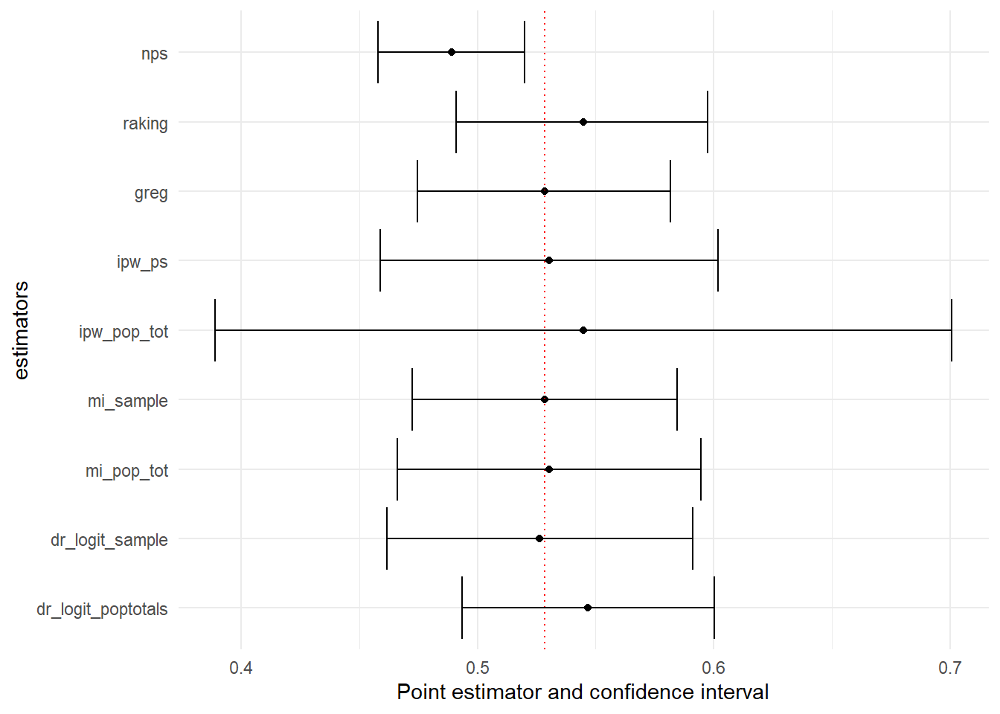
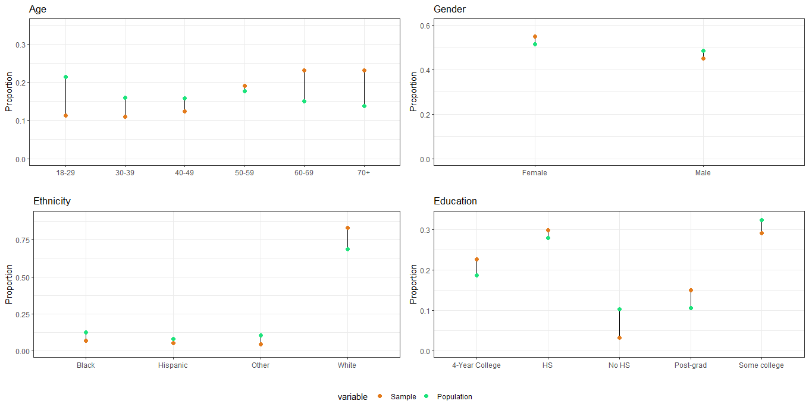
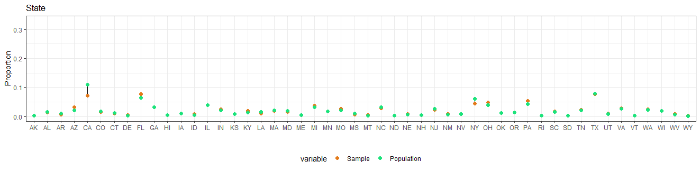
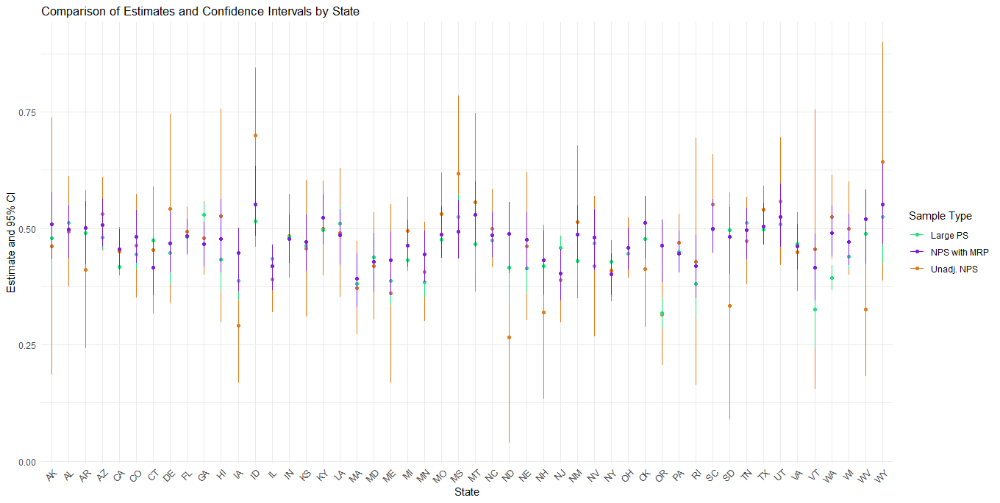

library(tidyverse)
library(ggplot2)
library(survey)
library(nonprobsvy)
library(PracTools)Survey data Integration and Inference with Nonprobability Samples
Introduction
This material is part of the workshop “Survey data integration: strategies for data collection and analyses” organized during the HERSS 2024 Summer School.
In this practical session we learn how to do inference with nonprobability samples; in the first part we discuss frequentist approaches (Inverse probability weighting, mass imputation and doubly robust methods) and in the second part the Bayesian MRP.
Frequentist approaches
In these exercises we use the nonprobsvy package developed by Maciej Beręsewicz and Łukasz Chrostowski. You can find additional information about the package here:
Modern inference methods for non-probability samples with R;
GitHub repository;
A video of a workshop on nonprobsvy.
The data
In this exercise, we will analyze data from the 2003 U.S. Michigan Behavioral Risk Factor Surveillance Survey, available in the PracTools package. The dataset, named mibrfss, includes various demographic and health-related variables. We use this dataset as the basis in order to simulate a population of size 100000 and different sampling scenarios. In particular, the data we provide you with are:
Population Totals:
pop_tot.rda– Contains population totals.Probability Sample (PS):
p_sample.rda– A high-quality sample of size 10,000, assumed to be a simple random sample.Non-Probability Sample (NPS):
np_sample.rda– A sample of size 1,000 with self-selection and coverage issues.
We consider a subset of the variables available in the mibrfss dataset, namely:
SMOKE100: Smoked 100 or more cigarettes in lifetime (1 = Yes; 2 = No)AGECAT: Age group (1 = 18-24 years; 2 = 25-34 years; 3 = 35-44 years; 4 = 45-54 years; 5 = 55-64 years; 6 = 65+)INETHOME: Has access to the Internet at home (1 = Yes; 2 = No)EDCAT: Education level (1 = Did not graduate high school; 2 = Graduated high school; 3 = Attended college or technical school; 4 = Graduated from college or technical school)
For this exercise, we assume that the non-probability sample (NPS) was collected through social media advertisements. This approach introduces potential biases because only individuals with internet access and who are active on the specific social media platform could participate. Consequently, the NPS may suffer from both self-selection bias and coverage bias (since the sample is restricted to those with internet access and a presence on social media).
In contrast, we assume that the probability sample (PS) was obtained through a simple random sampling method. This sample is considered a high-quality reference sample, and for simplicity, we do not need to account for any design or calibration weights.
Objectives
Estimate the proportion of U.S. individuals aged 18+ who smoked 100 or more cigarettes in their lifetime
Compare different estimation techniques against the true population value of 52.85%
Preliminary analyses
- Before starting, load the necessary R packages:
- Import and prepare the data: Load the datasets and inspect the data. Pay attention to the data format.
load("p_sample.rda")
load("np_sample.rda")
load("pop_tot.rda")Task: Familiarize yourself with the datasets.
pop_tot(Intercept) AGECAT2 AGECAT3 AGECAT4 AGECAT5 AGECAT6
100000 13408 19554 22526 16875 21879
RACECAT2 RACECAT3 EDCAT2 EDCAT3 EDCAT4 INETHOME1
8255 5113 30925 28464 31668 65370 Compare the distribution of the covariates in the probability and nonprobability samples:
You can use
prop.table.
Click here to show the solution
# Age
prop.table(table(p_sample$AGECAT))
1 2 3 4 5 6
0.0564 0.1351 0.1992 0.2211 0.1718 0.2164 prop.table(table(np_sample$AGECAT))
1 2 3 4 5 6
0.126 0.143 0.219 0.241 0.152 0.119 # Race
prop.table(table(p_sample$RACECAT))
1 2 3
0.8699 0.0792 0.0509 prop.table(table(np_sample$RACECAT))
1 2 3
0.878 0.061 0.061 # Education
prop.table(table(p_sample$EDCAT))
1 2 3 4
0.0875 0.3109 0.2801 0.3215 prop.table(table(np_sample$EDCAT))
1 2 3 4
0.111 0.256 0.267 0.366 # Internet at home
prop.table(table(p_sample$INETHOME))
0 1
0.35 0.65 prop.table(table(np_sample$INETHOME))
0 1
0.04 0.96 Individuals in the nonprobability samples are more young, with more graduated from collage or technical school higher education and mainly with internet at home.
- Define the sampling desing: Specify the sampling designs for both the PS and NPS samples using the
svydesignfunction.
Click here to show the solution
ps_design <- svydesign(ids = ~ 1,data = p_sample)Warning in svydesign.default(ids = ~1, data = p_sample): No weights or
probabilities supplied, assuming equal probabilitynps_design <- svydesign(ids = ~ 1,data = np_sample)Warning in svydesign.default(ids = ~1, data = np_sample): No weights or
probabilities supplied, assuming equal probability- Estimate Proportion from Non-Probability Sample
Use the svymean and/or svyciprop functions to calculate the proportion and its confidence interval. Save it in a compare tibble where you will add the estimates obtained with different methods.
Click here to show the solution
svymean(~ SMOKE100, nps_design) mean SE
SMOKE100 0.489 0.0158np_est=svyciprop(~ SMOKE100, nps_design)
np_est 2.5% 97.5%
SMOKE100 0.489 0.458 0.52ci=confint(svyciprop(~ SMOKE100, nps_design))
compare = tibble(estimate=np_est[1],
lower_bound=ci[1],
upper_bound=ci[2],
method="nps")The estimate of the proportion of individuals who smoked 100 or more cigarettes in their lifetime from the non-probability sample (NPS) is 48.9%, with a 95% confidence interval ranging from 45.8% to 52.0%. Note that the confidence interval does not include the true population proportion.
To improve our estimate, we will apply and compare various estimation techniques.
Classic approaches in weighting
In this part we will apply to standard approaches: raking and calibration.
- Start with raking. Follow the code in the slides and include the following variables
AGECAT,RACECAT,EDCAT, andINETHOME
Click here to show the solution
rake.dsgn <- calibrate(design = nps_design,
formula = ~ AGECAT + RACECAT + EDCAT + INETHOME,
calfun = "raking",
population = pop_tot)- Now implement GREG. Consider the same variables as before
Click here to show the solution
greg.dsgn <- calibrate(design = nps_design,
formula = ~ AGECAT + RACECAT + EDCAT + INETHOME,
calfun = "linear",
population = pop_tot)
#some weights are negative, we trim them
greg.dsgn<-trimWeights(greg.dsgn,lower=0, upper=Inf)- Save the estimates and the confidence intervals that you obtain
Click here to show the solution
np_rake=svyciprop(~ SMOKE100, rake.dsgn)
np_rake 2.5% 97.5%
SMOKE100 0.545 0.491 0.6ci=confint(svyciprop(~ SMOKE100, rake.dsgn))
compare <- compare %>%
bind_rows(tibble(estimate=np_rake[1],
lower_bound=ci[1],
upper_bound=ci[2],
method="raking"))
np_greg=svyciprop(~ SMOKE100, greg.dsgn)Warning in summary.glm(g): observations with zero weight not used for
calculating dispersionWarning in summary.glm(glm.object): observations with zero weight not used for
calculating dispersionnp_greg 2.5% 97.5%
SMOKE100 0.528 0.474 0.58ci=confint(svyciprop(~ SMOKE100, greg.dsgn))Warning in summary.glm(g): observations with zero weight not used for
calculating dispersion
Warning in summary.glm(g): observations with zero weight not used for
calculating dispersioncompare <- compare %>%
bind_rows(tibble(estimate=np_greg[1],
lower_bound=ci[1],
upper_bound=ci[2],
method="greg"))Inverse-probability weighting
When a probability sample is available
First, we assume that we have access to high quality data from a reference probability sample. Implement IPW using the nonprob function with the following specifications:
Set up a selection model that includes the variables
AGECAT,RACECAT,EDCAT, andINETHOMEUse as
targetvariableSMOKE100Use the probability sample design you created before as input for
svydesignUse logistic regression in
method_selectionSave the estimate and the confidence interval
Click here to show the solution
ipw_logit_ps <-
nonprob(
selection = ~ as.factor(AGECAT) + as.factor(RACECAT) + as.factor(EDCAT) + as.factor(INETHOME),
target = ~ SMOKE100,
data = np_sample,
svydesign = ps_design,
method_selection = "logit"
)
#display
cbind(ipw_logit_ps$output, ipw_logit_ps$confidence_interval) mean SE lower_bound upper_bound
SMOKE100 0.5302948 0.03644835 0.4588573 0.6017322#save
compare <- compare %>%
bind_rows(tibble(estimate=ipw_logit_ps$output$mean,
lower_bound=ipw_logit_ps$confidence_interval$lower_bound,
upper_bound=ipw_logit_ps$confidence_interval$upper_bound,
method="ipw_ps"))The estimate is 53.02% (CI: 45.88% - 60.17%). This estimate is much closer to the true population proportion of 52.85%, and the confidence interval now includes the true value.
When only population information is available
Now we assume that only population totals are available.
- Implement IPW using the
nonprobfunction with the previous specifications but instead ofsvydesign, specify thepop_totals.
Click here to show the solution
ipw_logit_poptotals <-
nonprob(
selection = ~ AGECAT + RACECAT + EDCAT + INETHOME,
target = ~ SMOKE100,
data = np_sample,
pop_totals = pop_tot,
method_selection = "logit"
)
#display
cbind(ipw_logit_poptotals$output, ipw_logit_poptotals$confidence_interval) mean SE lower_bound upper_bound
SMOKE100 0.5449075 0.07954355 0.389005 0.70081#save
compare <- compare %>%
bind_rows(tibble(
estimate = ipw_logit_poptotals$output$mean,
lower_bound = ipw_logit_poptotals$confidence_interval$lower_bound,
upper_bound = ipw_logit_poptotals$confidence_interval$upper_bound,
method = "ipw_pop_tot"
))Now, the estimate is 54.49% but the confidence interval is quite large (CI: 38.9% - 70%). This wide interval suggests considerable uncertainty in the estimate.
Mass Imputation
When a probability sample is available
First, we assume that we have access to high quality data from a reference probability sample. Implement Mass Imputation using the nonprob function with the following specifications:
Set up an outcome model for
SMOKE100that includes the variablesAGECAT,RACECAT,EDCAT, andINETHOMEUse the probability sample design you created before as input for
svydesignGiven the outcome type, select the correct option for the
method_outcomeandfamily_outcomeSave the estimate and the confidence interval
Click here to show the solution
mi_sample <- nonprob(outcome = SMOKE100 ~ AGECAT + RACECAT + EDCAT + INETHOME,
data = np_sample,
svydesign = ps_design,
method_outcome = "glm",
family_outcome = "binomial")
#display
cbind(mi_sample$output, mi_sample$confidence_interval) mean SE lower_bound upper_bound
SMOKE100 0.5284921 0.02853384 0.4725668 0.5844174#save
compare <- compare %>%
bind_rows(tibble(
estimate = mi_sample$output$mean,
lower_bound = mi_sample$confidence_interval$lower_bound,
upper_bound = mi_sample$confidence_interval$upper_bound,
method = "mi_sample"
))The estimate is 52.84% (CI: 47.1% - 58.4%).
When only population information is available
Now we assume that only population totals are available.
- Implement Mass Imputation using the
nonprobfunction with the previous specifications but instead ofsvydesign, specify thepop_totals.
Click here to show the solution
mi_poptotals <- nonprob(outcome = SMOKE100 ~ AGECAT + RACECAT + EDCAT + INETHOME,
data = np_sample,
pop_totals = pop_tot,
method_outcome = "glm",
family_outcome = "binomial")
#display
cbind(mi_poptotals$output,mi_poptotals$confidence_interval) mean SE lower_bound upper_bound
SMOKE100 0.5303917 0.03275615 0.4661909 0.5945926#save
compare <- compare %>%
bind_rows(tibble(
estimate = mi_poptotals$output$mean,
lower_bound = mi_poptotals$confidence_interval$lower_bound,
upper_bound = mi_poptotals$confidence_interval$upper_bound,
method = "mi_pop_tot"
))The estimate is 53.04% (CI: 46.6% - 59.5%).
Doubly-robust inference
When a probability sample is available
First, we assume that we have access to high quality data from a reference probability sample. Implement the Doubly-robust method using the nonprob function with the following specifications:
Set up an outcome model for
SMOKE100that includes the variablesAGECAT,RACECAT,EDCAT, andINETHOMESet up a selection model that includes the variables
AGECAT,RACECAT,EDCAT, andINETHOMEUse the probability sample design you created before as input for
svydesignGiven the outcome type, select the correct option for the
method_outcomeandfamily_outcomeUse a logistic regression for the selection model
Save the estimate and the confidence interval
Click here to show the solution
dr_logit_sample <-
nonprob(
selection = ~ AGECAT + RACECAT + EDCAT + INETHOME,
outcome = SMOKE100 ~ AGECAT + RACECAT + EDCAT + INETHOME,
data = np_sample,
svydesign = ps_design,
method_selection = "logit",
method_outcome = "glm",
family_outcome = "binomial"
)
#display
cbind(dr_logit_sample$output, dr_logit_sample$confidence_interval) mean SE lower_bound upper_bound
SMOKE100 0.5263664 0.03303545 0.4616181 0.5911147#save
compare <- compare %>%
bind_rows(tibble(
estimate = dr_logit_sample$output$mean,
lower_bound = dr_logit_sample$confidence_interval$lower_bound,
upper_bound = dr_logit_sample$confidence_interval$upper_bound,
method = "dr_logit_sample"
))The estimate is 52.53% (CI: 46.2% - 59.1%).
When only population information is available
Now we assume that only population totals are available.
- Implement the Doubly-Robust approach again using the
nonprobfunction with the previous specifications but instead ofsvydesign, specify thepop_totals.
Click here to show the solution
dr_logit_poptotals <-
nonprob(
selection = ~ AGECAT + RACECAT + EDCAT + INETHOME,
outcome = SMOKE100 ~ AGECAT + RACECAT + EDCAT + INETHOME,
data = np_sample,
pop_totals = pop_tot,
method_selection = "logit",
method_outcome = "glm",
family_outcome = "binomial"
)
#display
cbind(dr_logit_poptotals $output, dr_logit_poptotals $confidence_interval) mean SE lower_bound upper_bound
SMOKE100 0.5467979 0.02724855 0.4933917 0.6002041#save
compare <- compare %>%
bind_rows(tibble(
estimate = dr_logit_poptotals $output$mean,
lower_bound = dr_logit_poptotals $confidence_interval$lower_bound,
upper_bound = dr_logit_poptotals $confidence_interval$upper_bound,
method = "dr_logit_poptotals"
))The estimate is 54.7% (CI: 49.3% - 60.0%).
Comparing the results
Finally compare the estimates. Use can use ggplot to plot the data in the compare table.
Click here to show the solution
compare$method=factor(compare$method, levels = c("dr_logit_poptotals","dr_logit_sample","mi_pop_tot","mi_sample","ipw_pop_tot", "ipw_ps", "greg", "raking","nps"))
compare %>%
ggplot(aes(
y = method,
x = estimate,
xmin = lower_bound,
xmax = upper_bound
)) +
geom_point() +
geom_vline(
xintercept = 0.5285,
linetype = "dotted",
color = "red"
) +
geom_errorbar() +
labs(x = "Point estimator and confidence interval", y = "estimators")+theme_minimal()
Bayesian approaches
Multilevel regression and post-stratification
We use the data from from the 2018 Cooperative Cooperative Congressional Election Study, a US nationwide survey designed by a consortium of 60 research teams and administered by YouGov. The data and the guide with information about the survey and the questionnaire area available here.
This tutorial is adapted from the Book MRP Case Studies that you can find here.
Objectives
- Estimate the proportion of individuals who support the cut in the Corporate Income Tax rate. The questionnaire item is the following:
Congress considered many changes in tax law over the past two years. Do you support or oppose each of the following?
CC18_325a Taxes – Cut the Corporate Income Tax rate from 39 percent to 21 percent. (Support/Oppose)
- Compare the estimates obtained with the unadjasted nonprobability sample, with the estimates we would obtain if we had a large probability sample and the estimates obtained with MRP
The data
The variables are the following:
state: 50 US statesage: Age in classes, 18-29, 30-39, 40-49, 50-59, 60-69, 70+male: Gender classified as male (1) or Female (2)eth: Ethnicity classified as (Non-hispanic) White, Black, Hispanic, Other (which also includes Mixed)educ: Education classified as No HS, HS, Some college, 4-year college, Post-gradregion: Geographical region classified in Northeast, North Central, South, and Westrepvote: Republican vote share in the 2016 presidential election
If you follow the book example, some data pre-processing are needed. Here, for simplicity, we use a ready-to-use version of the data.
Before starting, you need to install and load the following packages:
library(tidyverse)
library(rstan)
library(rstanarm)
library(dplyr)
library(readr)
library(ggplot2)
library(bayesplot)
library(ggalt)
library(reshape2)You have the following dataset available:
statelevel_predictors_df: for each one of the 50 US States contains therepvoteand theregioncces_biased_df: a nonprobability sample of size 5.000 from which we obtain un-adjusted estimates and then MRP estimatescces_all_df: is the full probability sample of size 59.693 observations that we use only for comparisonpoststrat_df_full: is the poststratification table with population counts constructed considering the state, the ethniticy, the gender, the age and the education of individuals. As we defined the levels for these variables, the poststratification table must have \(50 \cdot 6 \cdot 2 \cdot 4 \cdot 5 = 12.000\) rows. This means we actually have more rows in the poststratification table than observed units, which necessarily implies that there are some combinations in the poststratification table that we don’t observe in our nonprobability sample. In this example, we ensured that all cells in the poststratification table were included, even if their weight was zero, but this was done solely for illustrative purposes.
statelevel_predictors_df <- read_csv('statelevel_predictors.csv')
load("cces_all_df.rda")
load("cces_biased_df.rda")
load("poststrat_df_full.rda")Preliminary analyses
- Compare the composition of the nonprobability sample with respect to the population characteristics (in the poststratification table)
One of the possible solutions follows.
Click here to show the solution
library(dplyr)
library(ggplot2)
library(ggalt)
library(reshape2)
library(forcats)
# Function to calculate sample and population proportions
calculate_proportions <- function(sample_df, poststrat_df, group_var) {
sample_prop <- sample_df %>%
group_by({{ group_var }}) %>%
summarise(Sample = n() / nrow(sample_df))
pop_prop <- poststrat_df %>%
group_by({{ group_var }}) %>%
summarise(Population = sum(n) / sum(poststrat_df$n))
inner_join(sample_prop, pop_prop, by = as.character(substitute(group_var)))
}
# Function to create dumbbell plots
create_dumbbell_plot <- function(data, group_var, x_limits, title, x_label = "Proportion") {
ggplot(data) +
geom_dumbbell(aes(y = {{ group_var }}, x = Sample, xend = Population)) +
geom_point(
data = melt(data, id.vars = as.character(substitute(group_var))),
aes(y = {{ group_var }}, x = value, color = variable),
size = 2
) +
coord_flip() +
scale_x_continuous(limits = x_limits) +
theme_bw() +
labs(title = title, x = x_label, y = "") +
theme(legend.position = "none")+
scale_color_manual(values=c("#E37B1C", "#1CE37B"))
}
# Age Plot
age <- calculate_proportions(cces_biased_df %>% mutate(age = factor(age)), poststrat_df, age)
age_plot <- create_dumbbell_plot(age, age, c(0, 0.35), "Age", "Proportion")
# Gender Plot
gender <- calculate_proportions(cces_biased_df, poststrat_df, male) %>%
mutate(male = factor(male, levels = c(-0.5, 0.5), labels = c("Female", "Male")))
gender_plot <- create_dumbbell_plot(gender, male, c(0, 0.6), "Gender")
# Ethnicity Plot
ethnicity <- calculate_proportions(cces_biased_df, poststrat_df, eth)
ethnicity_plot <- create_dumbbell_plot(ethnicity, eth, c(0, 0.9), "Ethnicity")
# Education Plot
education <- calculate_proportions(cces_biased_df %>% mutate(educ = factor(educ)), poststrat_df, educ)
education_plot <- create_dumbbell_plot(education, educ, c(0, 0.33), "Education")
# State Plot
state <- calculate_proportions(cces_biased_df, poststrat_df, state)
state_plot <- create_dumbbell_plot(state, state, c(0, 0.33), "State")+
theme(legend.position="bottom")
# Display all plots
ggpubr::ggarrange(age_plot, gender_plot, ethnicity_plot,
education_plot, nrow=2,ncol=2,common.legend = TRUE, legend="bottom")
state_plot

We can see that in the nonprobability samples individuals tends to be older, male, white, less educated and from Republican states.
The Mister: MR
In this section you need to implement a multilevel regression in order to predict the outcome (
taxred) based on a set of factors.Use the
stn_gmlerfunction.Include in the model varying intercepts
(1 | x)for:age,eth,educ, andstateInclude interactions
(1 | x1:x2)betweenmaleandeth,educandageandeducandethInclude as state-level predictors also
repvoteandregionUse a logistic model
Click here to show the solulion
library(rstanarm)
fit <- stan_glmer(taxred ~ (1 | state) + (1 | eth) + (1 | educ) + (1 | age) + male +
(1 | male:eth) + (1 | educ:age) + (1 | educ:eth) +
repvote + factor(region),
family = binomial(link = "logit"),
data = cces_biased_df,
prior = normal(0, 1, autoscale = TRUE),
prior_covariance = decov(scale = 0.50),
adapt_delta = 0.99,
refresh = 0,
seed = 1010)Running this code might be computational expensive, thus you can directly load the data with the results:
fit <- readRDS("my_fit.rds")The P: Postststratification
The second step is to poststratify, but first we use our model to get an estimate for each row of the post-stratification table. Then, poststratification is implemented by weighting the estimate by the proportion of individual in that poststratification cell.
Thus, we first compute the proportion for each cell of the postratificaiton table:
poststrat_df <-poststrat_df %>%
mutate(prop=n/sum(n),.by=state)The following code shows how to:
Generate predictions using the Bayesian Model:
The first part of the code involves generating predictions for the poststratification data based on the Bayesian model we’ve estimated. This process uses the add_epred_draws() function to draw 4000 samples from the posterior predictive distribution.
Compute the MRP estimates: The procedure involves the following steps:
- Compute the Weighted Average Prediction: To obtain the MRP estimates, remember the formula in the slides:
pred * n/N, wherepredrepresents the predicted preference value,nis the number of people in each poststratification cell, andNis the total population size. This formula adjusts the predictions according to the size of each poststratification cell, giving a weighted average. - Summarize Predictions by State: For each state, aggregate the weighted predictions from all poststratification cells within that state. At this stage, you will have 4000 weighted predictions for each state.
- Average the Predictions across the 4000 draws: Since we have 4000 draws, we compute the average prediction. To quantify the uncertainty, we calculate the 2.5th and 97.5th percentiles of the predictions, which form the lower and upper bounds of the 95% credibility interval, respectively.
Click here to show the code
library(tidybayes)Warning: package 'tidybayes' was built under R version 4.3.1mrp_estimates = fit %>%
add_epred_draws(newdata = poststrat_df, ndraws = 4000) %>%
rename(pred = .epred) %>%
mutate(ps_pred = pred * prop) %>%
ungroup() %>%
summarise(pred = sum(ps_pred),
.by = c(state, .draw)) %>%
summarise(
estimate = mean(pred),
lower_ci = quantile(pred, 0.025),
upper_ci = quantile(pred, 0.975),
.by = state
)- We want to compare the MRP estimates with those derived from an unadjusted nonprobability sample and with estimates from a large probability sample. To accomplish this, you can use the following code. Remember that:
- To compute the confidence interval, you first need to determine the standard deviation of the variable (Bernoulli).
- The confidence interval is then computed as the estimate plus or minus 2 times the standard dev. This is because, under the assumption of a normal distribution, approximately 95% of the data lies within 2 standard deviations of the mean.
Click here to show the code
# Function to calculate the standard error for a Bernoulli distribution
get_se_bernoulli <- function(p, n) {
sqrt(p * (1 - p) / n)
}
# Define the states
state_abb <- datasets::state.abb
# Function to calculate estimates and confidence intervals for a given dataset
calculate_estimates <- function(data, state_abb) {
data %>%
filter(state %in% state_abb) %>%
group_by(state) %>%
summarize(
estimate = mean(taxred, na.rm = TRUE),
n_sample = n(),
se = get_se_bernoulli(estimate, n_sample),
lower_ci = estimate - 2 * se,
upper_ci = estimate + 2 * se
) %>%
ungroup()
}
# Calculate estimates and confidence intervals for both datasets
biased_estimates <- calculate_estimates(cces_biased_df, state_abb)
full_estimates <- calculate_estimates(cces_all_df, state_abb)
# Combine the results into one dataset (in wide format)
states_df <- biased_estimates %>%
rename_with(~ paste0("biased_", .), -state) %>%
left_join(full_estimates %>%
rename_with(~ paste0("full_", .), -state), by = "state") %>%
left_join(mrp_estimates%>%
rename_with(~ paste0("mrp_", .), -state), by = "state")Compare the results
- Compare the results using
ggplot
Click here to show the solution
# Plotting the comparison using ggplot
ggplot(states_df) +
geom_point(aes(x = state, y = biased_estimate, color = "Unadj. NPS")) +
geom_errorbar(aes(x = state, ymin = biased_lower_ci, ymax = biased_upper_ci, color = "Unadj. NPS"), width = 0) +
geom_point(aes(x = state, y = full_estimate, color = "Large PS")) +
geom_errorbar(aes(x = state, ymin = full_lower_ci, ymax = full_upper_ci, color = "Large PS"), width = 0) +
geom_point(aes(x = state, y = mrp_estimate, color = "NPS with MRP")) +
geom_errorbar(aes(x = state, ymin = mrp_lower_ci, ymax = mrp_upper_ci, color = "NPS with MRP"), width = 0) +
labs(
title = "Comparison of Estimates and Confidence Intervals by State",
x = "State",
y = "Estimate and 95% CI",
color = "Sample Type"
) +
scale_color_manual(values = c("Unadj. NPS" = "#E37B1C", "NPS with MRP" = "#7B1CE3", "Large PS" = "#1CE37B")) +
theme_minimal() +
theme(axis.text.x = element_text(angle = 45, hjust = 1))
Acknowledgments
Some of the exercises are adapted from:
Valliant, R., Dever, J. A., & Kreuter, F. (2018). Practical tools for designing and weighting survey samples (Vol. 1). New York: Springer.
The MRP Case Studies online book that you can find here.